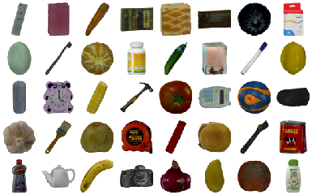
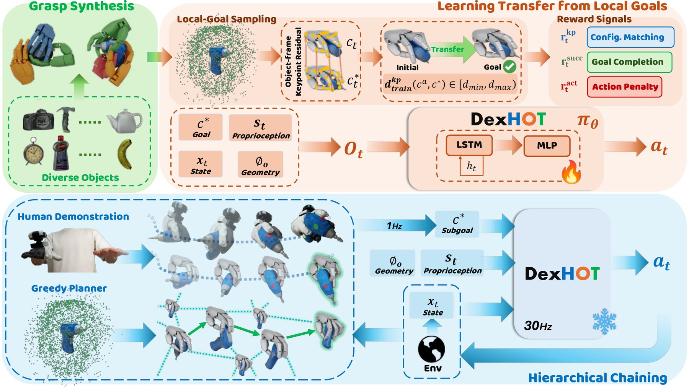

Training objects
40 objects from 40 categories
1 CFCS, School of CS, PKU, China
2 National Key Laboratory for Multimedia Information Processing, School of CS, PKU, China
3 PrimeBot
4 State Key Laboratory of General Artificial Intelligence, BIGAI
Dexterous manipulation involves not only moving objects, but also arranging the hand around them to maintain useful contacts and enable subsequent actions. Yet many learning-based systems specify goals primarily through object poses or trajectories, leaving hand–object configurations to emerge implicitly.
We introduce DexHOT, which formulates dexterous manipulation as hand–object configuration transfer: moving between feasible configurations that jointly specify hand articulation and object pose relative to the wrist. DexHOT learns a reusable relation-conditioned transfer primitive from synthetic feasible configuration pairs and composes long-horizon behaviors through closed-loop tracking of configuration subgoals.
On DexHOTBench with 120 objects, a single policy achieves 80.5% transfer success on seen objects and 69.4% on unseen objects; on a real dexterous hand, it achieves 61.5% success over 200 real-robot transfers and 90% task success across six demonstration-guided tasks. These results show that explicit hand–object goals provide an expressive and composable interface for dexterous manipulation.

DexHOT transfers between configurations that jointly specify hand articulation and object pose relative to the wrist.
Left · Planned transferA greedy planner selects subgoals from a synthetic configuration pool to reach a distant target.
Right · Long-horizon tasksHuman demonstrations provide subgoals, including previously unseen hand–object configurations.
One shared policy transfers from any feasible hand–object configuration to another, jointly controlling finger articulation and object pose relative to the wrist.
Objects
Source and target hand–object configurations are uniformly sampled from each object’s validated pool, excluding near-duplicate pairs. The fingers drive the transfer with a fixed, palm-down wrist.

Objects
The hand policy follows demonstration-provided configuration targets; a separate arm controller tracks the wrist trajectory.

Frames progress from left to right. Cyan callouts enlarge the final visible Sharpa hand–object relationship for barcode scanning, shelf placement, block assembly, salt shaking, water pouring, and screw driving.

The hand maintains a scanner-compatible configuration while the wrist follows the demonstrated scanning motion.
Tasks
Motivation
A correct object pose can still fail when the hand blocks the barcode.
The object reaches a plausible pose, but the hand occludes the barcode. The final failed frame is held briefly for clarity.
Goal specification
Method
A single policy learns local configuration transfers and reaches more distant goals through hierarchical chaining.
Build feasible hand–object configurations across diverse objects.
Train a shared policy with synthetic local-goal configuration pairs.
Compose long-horizon behavior using a planner or demonstrations.

One reusable hand policy follows configuration subgoals in closed loop, without task-specific policy training.
Top · TrainingGrasp synthesis and local-goal sampling supply configuration pairs for relation-conditioned policy learning.
Bottom · DeploymentA greedy planner or human demonstration supplies subgoals to the hand policy.
Benchmark
120 objects. 1.2 million feasible configurations. A benchmark for hand–object configuration transfer.
The central Mollweide map shows object z-axis directions relative to the hand across all configuration pools; rotation about the object z-axis is omitted. Colors encode density percentile.
Citation
@article{gui2026dexhot,
author = {Gui, Zhewei and Bolton, Anthony and Zhang, Jiyao and Chen, Zeyuan
and Yan, Qiyang and Wang, Tianyu and Dong, Hao},
title = {DexHOT: Learning Hand--Object Configuration Transfer for Dexterous Manipulation},
journal = {arXiv preprint},
year = {2026},
}We thank Hangqi Zhou and Zihao Zhao for their assistance with the hardware, and Junhan Wang, Zimu Han and Yiming Zeng for their insightful discussions. This research was supported by the Beijing Natural Science Foundation (26L080330) and the National Natural Science Foundation of China (62376006).